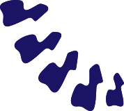
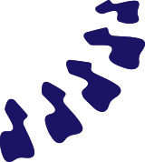

La salute
scende in campo
Edoardo Marchitelli
 OSTEOPATA MEMBRO R.O.I.
(REGISTRO DEGLI OSTEOPATI ITALIANI)
dal 00/00/0000
Chi sono
Sono nato a Milano nel 1999 e da sempre lo sport è parte integrante della mia vita: 11 anni di calcio, seguiti da esperienze nel canottaggio, nell'arrampicata e più recentemente, nel padel. Questa passione mi ha portato a specializzarmi in osteopatia per cinque anni presso il Soma Istituto Osteopatia Milano.
Terminati gli studi, ho approfondito il legame tra sport e benessere partecipando a un corso dedicato alle problematiche specifiche degli sport da racchetta, con un focus specifico su tennis e padel. Parallelamente, l'esperienza maturata nel negozio di famiglia, mi ha permesso di perfezionare l'arte dell'incordatura delle racchette da tennis.
La sinergia tra formazione accademica, esperienza pratica e passione mi permette di comprendere in modo particolare le esigenze degli sportivi, offrendo così un approccio integrato e personalizzato al tuo benessere.
Cosa faccio e per chi
Il mio approccio integrato all'osteopatia, frutto di anni di studio e pratica, nasce dal presupposto che ogni paziente sia unico. Per questo elaboro percorsi di cura personalizzati, che non si limitano al trattamento dei sintomi ma mirano a ristabilire un equilibrio globale, lavorando sia sul piano fisico che su quello del benessere emotivo e dello stile di vita.
Chi si rivolge all'osteopata ? Chiunque! L'osteopatia è una pratica manipolativa e olistica che considera il corpo come un sistema interconnesso. Che tu sia un privato alla ricerca del tuo equilibrio personale o un'azienda interessata a promuovere la salute dei tuoi dipendenti, il mio impegno è quello di offrirti un supporto su misura per tornare a vivere in armonia.
Aziende
Sei titolare di un'azienda e vorresti offrire un benefit concreto ai tuoi dipendenti?
Contattami e scopri le offerte a te dedicate.
Privati
Sei un privato e vorresti effettuare la tua prima valutazione?
Contattami per fissare un appuntamento.
Come lo faccio
Ho sviluppato metodi di valutazione efficaci che mi consentono di capire sin da subito se il paziente rientra nel mio ambito di intervento.
Dopo una dettagliata fase anamnestica e di raccolta dati, si passa a un'approfondita valutazione posturale: una prima analisi generale e, successivamente, una valutazione specifica del/i distretto/i corporeo/i evidenziato/i durante l'anamnesi. Questa fase è fondamentale per individuare con precisione le aree di intervento.
Segue quindi il trattamento vero e proprio, studiato e creato su misura per ogni singolo paziente. In questa fase, mi assicuro di spiegare nel dettaglio il percorso terapeutico, rispondendo a ogni dubbio e fornendo tutti i chiarimenti necessari.
Infine, la fase di rivalutazione permette di verificare gli effetti immediati del trattamento. A complemento di questa analisi, offro consigli terapeutici da eseguire autonomamente a casa, per coadiuvare il percorso di cura e promuovere uno stile di vita sano e armonioso.
Dove lo faccio
Svolgo i miei trattamenti in due comode modalità per venire incontro alle tue esigenze: eseguo sedute a domicilio sia per privati che per aziende e, contestualmente, ricevo presso lo studio BodyLab in via Vincenzo Foppa, 61 - Milano.
Date e orari per le visite in studio sono attualmente in fase di definizione, per garantirti sempre la massima flessibilità e professionalità.

Parliamone
inizia il tuo percorso verso una vita più equilibrata!
Edoardo Marchitelli | Osteopata
username@emailaddress.com
+39 392 0631736
Ricevo su appuntamento:
c/o Studio BodyLab
via Vincenzo Foppa, 61 - Milano